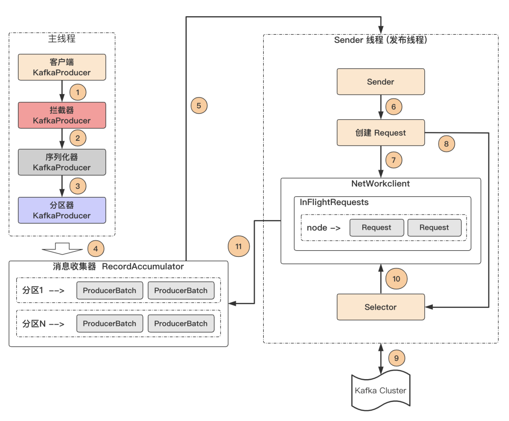
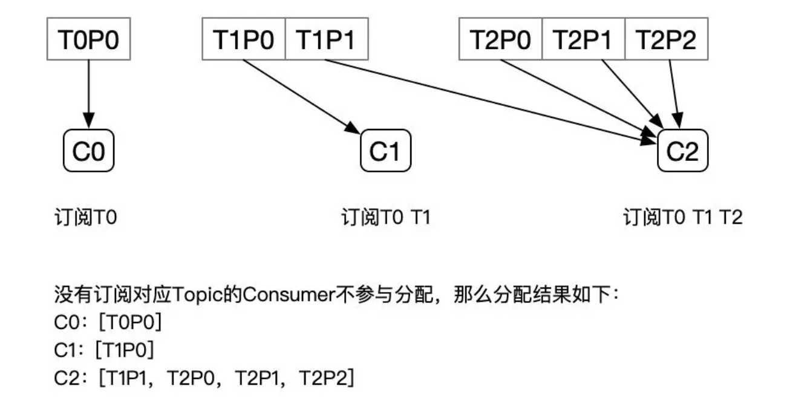
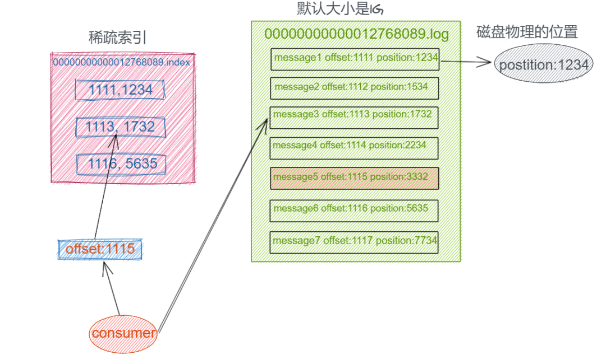
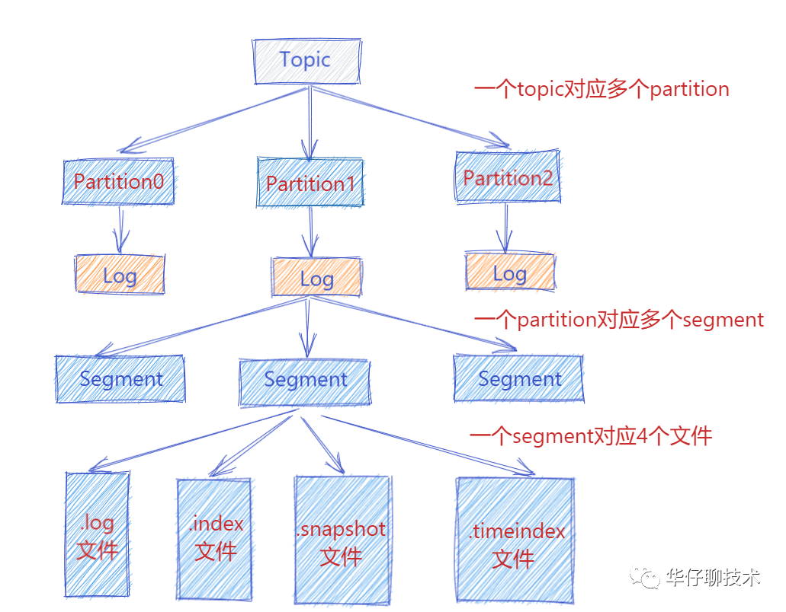

Kafka知识总结
1. 基本概念
主要是分清Broker、主题Topic、分区Partition、副本Replica之间的概念
1.1 服务器层面
- Broker：一个独立的Kafka服务被称为Broker，可以理解为Kafka集群中的一个节点。
- 集群控制器（Controller）：每一个集群都会选举出一个Broker作为集群控制器Controller（第一个成功在zookeeper中创建
/kafka/controller节点的Broker会被指定为集群控制器），主要负责集群管理工作，包括：- 创建删除主题、增加分区并选择副本的Leader
- 集群Broker管理（Broker新增、退出、故障）
- 分区副本Preferred Leader选举
- 消费者组分区重分配
- 数据服务 – 向其他Broker提供集群的元数据信息
1.2 主题层面
- 主题（Topic）：主题-订阅的模式，生产者将消息发送至相应的Topic中，消费者则从感兴趣的Topic中取出消息消费。Topic是一个逻辑概念。
- 分区（Partition）：一个Topic被分成多个分区Partition，一个Partition从属于一个Broker，是最基本的储存单元，储存着一个Topic中的部分数据。每个Partition都有自己独立的log文件，每条记录都以追加的形式写入。
- 副本（Replica）：为了保证Kafka的高可用，一个分区通常拥有多个副本。其中一个为Leader replica，其他为Follower replica，所有的事件都直接发送给Leader replica，Follower replica通过主从同步来保持与Leader replica数据一致。
- 偏移量（Offset）：Partition中的每条记录都会被分配一个唯一的序号，称为偏移量Offset。
- 消息（Message）：Kafka的基本数据单元。
- 批次（Batch）：为了减少网络了开销，提高IO效率，多个消息会被放入同一批次之后再发送给Kafka。
1.3 Leader选举
Kafka中多处涉及选举机制，容易混淆
- Broker Controller组件Leader的选举 – 主要是监控Kafka集群状态
- 分区多副本机制选举Leader – 副本的Leader负责与生产者消费者的所有通信，Follower只是作为可靠性备份（主从机制）
- 消费者选举Leader – 消费者的Leader选举主要是负责消费者组内各个消费者消费分区的分配
2. 生产者客户端工作原理
整个生产者客户端主要由两个线程协调运行，分别是程序主线程和发送线程。
- 程序主线程：主要负责消息的产生，然后通过拦截器、序列化器和分区器处理之后缓存到消息收集器RecordAccumulator中（多个消息打包之后变成ProducerBatch）
- 发送线程：主要负责从消息收集器中获取消息并将其发送至Kafka集群中
- 首先，客户端生成消息，交给拦截器，拦截器可以对数据进行预处理，比如消息的格式化显示等。
- 随后，消息交给序列化器，对其中的key和value进行序列化
- 分区器使得生产者能够根据一定的规则，将特定的消息发送至特定的分区中
- 之后消息会到消息收集器中，根据设定的batch.size或者linger.ms触发消息发送之后，才会将收集器中的消息发送给kafka集群
- batch.size：数据累积到batch.size大小之后，sender才会发送数据，默认16k
- linger.ms：如果数据没有达到batch.size，sender等待linger.ms设置的时间之后就会发送数据，默认值是0，表示没有延迟，一有消息到达就将消息发送出去（会导致网络IO频繁）
- 在发送线程中，InFlightRequests缓存这已经发出去，但是还没有收到响应的请求（Map<NodeId, Deque>，即Kafka节点Id和发出去的请求队列）。主要是限制最多缓存的请求数，通过
max.in.flight.requests.per.connection参数设置，默认为5，即每个连接维护一个长度为5的滑动窗口，最多只能缓存5个未响应的请求间隔（有点像TCP的滑动窗口，就算中间已经收到了响应，但是头和尾未响应，也是算头和尾之间的间距），如果超过该数据之后就不能向这个连接中发送更多的请求了 - Kafka集群的应答acks：
- 设置为0：生产者发送的数据，不需要等待Kafka集群数据落盘立即应答
- 设置为1：生产者发送的数据，Leader分区收到数据落盘后应答
- 设置为-1（all）：生产者发送的数据，Leader和ISR队列里面的所有节点数据落盘之后再由Leader应答
2.1 分区策略
如果自定义了分区器的话，当然是用自定义的方法，这里说的是默认情况下
使用默认分区器的情况下：
- 如果指定了消息的发往的分区，则使用这个分区
- 如果没有指定分区，但是指定了消息的key，则根据key的hash值映射到特定的分区（如果主题的分区数不变，key跟分区的映射关系就能保持一致）
- 如果没有指定分区或者是消息的key，会采用粘性分区器，消息会被随机发送到指定主题的其中一个可用分区，并尽可能一直使用该分区，直到发送至该分区的消息收集器中能够达到batch.size之后，才会切换发送至别的分区（随机至另外一个分区）
2.2 数据可靠性保证
acks设置为不同值下可能出现的情况
- 0：生产者发送至Kafka集群中的数据，不需要等待落盘，立即应答（应答之后Leader挂了，数据存在丢失的问题）
- 1：Leader分区收到数据并落盘之后应答（应答之后Leader挂了，其他Follower都还没有同步到数据，也存在数据丢失的问题）
- -1（all）：Leader和ISR队列里面的所有节点数据落盘之后再由Leader应答（可能因为某个Follower网络或者挂掉的原因迟迟未能同步，会导致ACK响应阻塞，Kafka使用ISR队列来解决这个问题）（如果分区副本设置为1个，或者ISR中应答的最小副本数量min.insync.replicas为1，则跟ack=1效果差不多，还是有数据丢失的问题）
- ISR（in-sync replicas）队列：和Leader保持同步的所有Follower+Leader的集合（Leader：0，ISR：0、1、2），如果Follower长时间未向Leader发送通信请求或者同步数据，则会被Leader踢出ISR队列，由replica.lag.time.max.ms参数设置，默认30s。
- OSR（out-sync replicas）队列：与Leader不同步的Follower集合
数据完全可靠的条件 = ACK级别为-1 + 分区副本数大于等于2 + ISR里应答的最小副本数量大于等于2
2.3 数据重复问题
acks设置为-1的时候，生产者可能发送了数据过来，Leader正在跟Follower同步数据，还未响应，但是此时，部分Follower已经同步了数据，Leader却挂了，Kafka集群会重新挑选出新的Leader分区，生产者会重新发送数据，如果这个新选出来的Leader已经同步了旧Leader的数据，那么就会出现数据重复的问题。
2.3.1 数据传递的语义
- 至少一次（At Least Once）： ACK级别为-1 + 分区副本数大于等于2 + ISR里应答的最小副本数量大于等于2，保证生产者发送的数据Kafka集群会落盘，保证数据不会丢失，但可能重复
- 最多一次（At Most Once）： ACK = 0，保证生产者发送的数据最多只发送一次到Kafka集群，保证数据不重复，但是可能会丢失
- 精确一次（Exactly Once）： 数据即不能重复，也不能丢失
- 幂等性（单会话单分区精确一次）：生产者无论向Broker发送多少次重复数据，Broker都只会持久化一条，保证不会重复，结合至少一次就能达到精确一次。
- 事务：通过事务保证精确一次，实现多个Topic、多个Partition原子性的写入（见下文）
2.3.2 生产者幂等性
Kafka的幂等性是单会话单分区幂等
通过 <PID，partition，SeqNumber> 区分每一条数据。（单分区的原因看区分规则就知道，不同分区当成不同的消息）
PID（Producer ID）：对用户完全透明，是Producer每次连接上Kafka集群之后，都会向Broker申请一个全局唯一的PID，用来标识本次会话，如果Producer重启会导致PID的变化，所以Broker就会当成是一个新的生产者（单次会话的原因）。
partition：消息需要发往的分区号
SeqNumber：从0开始单调递增的，Broker端缓存了SeqNumber，对于每条接收的消息，只有SeqNumber比Broker缓存中的大1才接受，否则丢弃（实现幂等）。
3. 消费者客户端工作原理
消息的两种消费方式：
- pull（拉）模式：消费者主动从 mq 服务器中拉取数据（Kafka采用的方式）
- push（推）模式：mq服务器主动将数据推送至消费者（很难保证消费者的消费速度能跟得上mq服务器的推送速度）
常见的有两种消费模型：
- 队列模型（queuing）：一组消费者从服务读取消息，一条消息只有其中的一个消费者来处理。
- 发布-订阅模型（publish-subscribe）：消息被广播给所有的消费者，接收到消息的消费者都可以处理此消息。
Kafka 提供两种订阅方式：
- subscribe：订阅主题，能够通过正则表达式订阅多个主题，具有消费者组再平衡的功能。
- assign：能够直接订阅特定主题的特定分区，不具备消费者再平衡的功能。
Kafka 为这两种模型提供单一的消费者抽象模型：消费者组（Comsumer group）。
消费者用一个消费者组名（GroupId）标记自己，一个发布在 Topic 上的消息被分发给此消费者组中的一个成员（每个Topic的 Partition 只能由消费者组中的一个成员消费，但是一个消费者成员能够消费多个 Partition中的消息，是多对一关系）。
- 假如所有的消费者都在一个组中，那么这就变成了队列模型
- 假如所有的消费者都在不同的组中，那么就完全变成了发布-订阅模型
一个消费者组中的消费者成员订阅同一个 Topic，每个消费者成员接收 Topic 的一部分分区的消息，从而实现对消费者的横向扩展，对消息进行分流。但是不要让消费者组中消费者成员的数量多于 Topic的 Partition 的数量，因为多余的消费者成员会空闲出来。

3.1 分区的分配策略
分区分配策略的主要作用是决定每个消费者组成员消费订阅 Topic 中的哪个分区。
Kafka 可以同时使用多个分区分配策略，由
partition.assignment.strategy参数设定，默认是 Range + CooperativeSticky。消费者也可以自定分区策略，通过继承
PartitionAssignor接口或者AbstractPartitionAssignor抽象类来实现。
消费者组分区的分配策略主要有：
- RangeAssignor（范围）
- RoundRobinAssignor（轮询）
- StickyAssignor（粘性）
- CooperativeStickyAssignor（合作者粘性）：与StickyAssignor类似
3.1.1 RangeAssignor
对每个 Topic 进行独立的分区分配。对于每一个 Topic，首先对分区按照分区 ID 进行排序，然后对订阅该 Topic 的消费者组成员进行排序，之后尽量均衡地将分区分配给消费者。
首先要决定每个消费者消费分区的个数，Topic 分区数对消费者个数取余便是每个消费者至少要处理的分区个数，但是会有剩余的分区，剩余的分区则平均分配给排序靠前的消费者。然后从0号分区开始按每个消费者的消费分区个数按顺序分配。
缺点：随着消费者订阅 Topic 数量的增加，会导致不平衡问题，排序靠前的消费者会被分配更多的分区（因为上面的分配策略是针对单个 Topic 的）。

3.1.2 RoundRobinAssignor
将消费者组内订阅所有 Topic 的分区及所有消费者进行排序后尽量均衡的分配。如果消费者组内，消费者订阅 Topic 列表是相同的（每个消费者成员都订阅了相同的 Topic），那么分配结果是尽量均衡的（针对所有 Topic，消费者成员之间分配到的分区数的差值不会超过 1）。如果订阅的 Topic 列表是不同的，那么分配结果是不保证“尽量均衡”的，因为某些消费者成员不参与部分 Topic 的分配。
分配策略是：将所有 Topic 的 Partition 和所有消费者成员都列出来，分别按照
hashcode进行排序，最后通过轮询算法分配 Partition给消费者成员。

对于订阅组内消费者订阅 Topic 不一致的情况：假设有三个消费者分别为C0、C1、C2，有3个 Topic T0、T1、T2，分别拥有1、2、3个分区，并且C0订阅T0，C1订阅T0和T1，C2订阅T0、T1、T0，那么RoundRobinAssignor的分配结果如下图所示，没有订阅对应 Topic 的消费者不参与分配，但是排序轮询还是按正常一样。
可以看到已经尽量保证均衡了，但是 C2 承担了 4 个分区，而 C1 其实是订阅了 T1 的，如果把 T1P1 交给 C1 负责会更加均衡。
3.1.3 StickyAssignor
无论是RangeAssignor，还是RoundRobinAssignor，当前的分区分配算法都没有考虑上一次的分配结果。StickyAssignor解决的就是这个问题。
StickyAssignor的主要目标：
- 分区的分配尽量均衡
- 每一次重分配的结果尽量与上一次分配结果保持一致

上面的例子中，C1 下线后，Sticky 模式原来分配给 C0、C2 的分区都没有发生变动，并且最终 C0、C1达到均衡的目的；而RoundRobin 模式中原本分配给 C0 的 T1P1，以及原本分配给 C2 的 T1P0 都发生了变动。
下面是另外一个例子

3.2 消费者组再平衡
再平衡是指 Kafka 消费者组成员或者订阅 Topic 发生变化时的一种分区重分配机制，再平衡期间消费者会停下手头的事情，一般有三种情况会触发再平衡：
- 消费者组成员数量发生变化：消费者组中新增或者删除某个成员，导致需要重新调整分区分配
- 订阅主题 Topic 数量发生变化：消费者订阅的 Topic 发生变化，比如订阅的 Topic 采用的是正则表达式的形式
test-*，如果新建了一个 Topic 名为test-hello，那么该 Topic 也是需要分配给消费者的，此时就会触发再平衡- 订阅主题 Topic 的分区数发生变化：订阅主题 Topic 增加或减少了分区数量，也会触发再平衡
再平衡主要涉及到Kafka Broker中的Group Coordinator以及内部 Topic __consumer_offsets（更正式的名字是 Offset Topic）。
3.2.1 Group Coordinator
Group Coordinator 主要用于消费者 offset 管理、消费者组成员与 Topic Partition的分配和 Consumer Rebalance。
在 Broker 启动时，每个 Broker 都会启动一个 Group Coordinator ，但只有
__consumer_offsets的 Partition 的 Leader 才会直接与消费者进行交互，也就是该消费者组的 Group Coordinator，其他的分区副本的 Group Coordinator只是作备份，一旦 Leader 所在 Broker 挂掉之后及时进行替代。
3.2.2 消费者组状态机
Kafka 设计了一套消费者组状态机，来帮 Group Coordinator 完成整个再平衡流程。状态机中为消费者组定义了 5 种状态：Empty、Dead、PreparingRebalance、CompletingRebalance 和 Stable。
| 状态 | 含义 |
|---|---|
| Empty | 消费者组内没有任何成员，但消费者组可能存在已提交的 offset 数据，而且这些 offset 数据尚未过期 |
| Dead | 同样是消费者组内没有任何成员，但消费者组的元数据信息已经在 Group Coordinator 端被移除。Group Coordinator 组件保存着当前向它注册过的所有消费者组信息，所谓的元数据信息就类似于这个注册信息 |
| PreparingRebalance | 消费者组准备开启再平衡，此时所有成员都要重新请求加入消费者组 |
| CompletingRebalance | 消费者组下所有成员已经加入，各个成员正在等待分配方案。该状态在老一点的版本种被称为 AwaitingSync，它和 CompletingRebalance是等价的 |
| Stable | 消费者组的稳定状态。该状态表明再平衡已经完成，组内各成员能够正常消费数据了 |

一个消费者组最开始是 Empty 状态，当再平衡开启后，它会被置于 PreparingRebalance 状态等待成员加入，之后变更到 CompletingRebalance 状态等待分区分配方案，最后流转到 Stable 状态完成再平衡。
当有新成员加入或者已有成员退出消费者组的时候，消费者组的状态从 Stable 直接跳到 PreparingRebalance 状态，此时，所有现存成员就必须重新申请加入消费者组。当所有成员都退出组后，消费者组状态变更为 Empty。Kafka定期自动删除过期位移的条件就是，消费者组要处于 Empty 状态。因此，如果你的消费者组停掉了很长的时间（超过 7 天），那么 Kafka 很可能就把该组的 offset 数据删除了。我相信，你在 Kafka 的日志种一定经常看到下面这个输出：Removed ✘✘✘ expired offsets in ✘✘✘ milliseconds.。这就是 Kafka 在尝试定期删除过期 offset。
3.2.3 再平衡全流程
第一步 FIND_COORDINATOR
消费者启动的时候会发送 FindCoordinatorRequest 请求。
目的：
- 确定负责该消费者组的 Group Coordinator 所在的 Broker（每个 Broker 中都会有 Group Coordinator，但是一个消费者组由一个 Group Coordinator 协调工作）
- 创建与该 Broker相互通信的网络连接
过程：
- 如果消费者已经保存了消费者组对应的 Group Coordinator 节点的信息，并且与它之间的网络连接是正常的，那么可以进入下一阶段；否则向 Kafka 集群中负载最小的 Broker发送 FindCoordinatorRequest 请求寻找 Group Coordinator。
- Group Coordinator的选择方式是：BrokerId = PartitionLeader( Hash( GroupId ) % __consumer_offsets的分区数 ) ，即将 GroupId 取哈希之后对
__consumer_offsets的分区数取余，然后这个余数就作为以后 消费者 offset 要写入的__consumer_offsets的分区，这个分区 Partition Leader 所在的 Broker 中的 Group Coordinator 就负责这个消费者组的工作协调（非常绕，多看几遍）（其实就是消费者 offset 需要写入 __consumer_offsets分区的Leader所在 Broker中）。
第二步 JOIN_GROUP
当消费者组成员加入组时，会向 Group Coordinator 发送 JoinGroup 请求，该请求中包含成员订阅的主题。
目的：
- 选举消费者 Leader
- 由消费者 Leader 制定具体的分区分配方案
过程：
- 第一个发送 JoinGroup 请求到 Group Coordinator 的成员自动成为消费者 Leader，根据 Group Coordinator 响应中的消费者组成员订阅信息制定分区分配方案。

第三步 SYNC_GROUP
消费者 Leader 将制定好的分区分配方案发送在 SyncGroup 请求中发送给 Group Coordinator。其他消费者成员也会向 Group Coordinator 发送 SyncGroup 请求，只不过请求体中没有实际的内容。然后 Group Coordinator 以 SyncGroup 响应的方式分发给所有成员，这样组内所有成员就都知道自己该消费哪些分区。当所有成员都成功接收到分配方案之后，消费者组就进入到了 Stable 状态，开始正常消费工作（也会经过反序列化器、拦截器）。
目的：
- 通过 Group Coordinator 同步消费者 Leader 制定好的分区分配方案

Heartbeat 线程
心跳线程是一个独立的线程，通过向 Group Coordinator 发送心跳来维持自己与消费者组的从属关系，以及对分区的所有权关系。
当消费者组有新成员加入时，也是通过心跳请求的响应来通知组内现有成员开启新一轮的再平衡。


正常情况下，每个组内成员都会定期汇报位移给协调者。当重平衡开启时，协调者会给予成员一段缓冲时间，要求每个成员必须在这段时间内快速地上报自己的位移信息，然后再开启正常的 JoinGroup/SyncGroup 请求发送。

【三】kafka体系架构之消费者客户端概述（分区分配策略、再均衡、偏移量）
3.3 内部Offset Topic
在 Kafka 0.9 版本之前，消费者的 offset 是保存在 zookeeper 中的，但是 zookeeper 不适合用于高频写操作的场景，这会影响 Kafka 的消息吞吐量，所以 Kafka 需要一个能够提供高持久性、支持高频写操作的地方保存 offset。明显 Kafka 的Topic 设计天然就满足了这两个条件，因此 Kafka 使用内部主题保存 offset 的这件事，是自然而然的。
Offset Topic 的 offset管理机制其实也很简单，就是将 Consumer 的消费的 offset 数据作为一条普通的 Kafka 消息， 提交到 __consumer_offsets 中。默认情况下，__consumer_offsets 主题的分区数是 50，副本数是 3。
当 Kafka 集群中的第一个 Consumer 程序启动时，Kafka 会自动创建位移主题，Offset Topic 主题的 Key 和 Value 组成如下：
- Key： 应该保存 3 部分的内容 <GroupId, 主题名, 分区号>
- Value： 应该保存的数据有 <offset, 时间戳， 元数据> ，元数据是为了帮助 Kafka 执行各种各样的后续操作，比如删除过期位移消息等。
具体消费者消费的 offset 储存到 __consumer_offsets 的哪个分区上，是根据abs(GroupId.hashCode()) % NumPartitions来计算（其中，NumPartitions 是 __consumer_offsets的分区数）
3.3.1 提交偏移量
如果消费者消费到了 offset，则提交的偏移量位置是 offset + 1，指向下一跳消息的位置。
提交的偏移量是 poll() 最后一次拉取的偏移量。当然手动提交的时候，也能够指定偏移量位置。

自动提交
开启时，消费者使用 poll() 方法从 Kafka 中拉取消息数据，同时消费者会有一个后台线程定时向 Kafka 提交消费者的 offset，自动提交涉及两个参数：
- enable.auto.commit：设为 true，表示开启自动提交（默认）
- auto.commit.interval.ms：自动提交时间间隔，默认是 5 秒
自动提交丢数据场景：消费者A，第一次 poll 了100条数据，刚好第一次提交偏移量也是 100+1（ 5 秒提交一次），但是拉取的这 100 条才处理了前 50 条，A 就挂了，相当于51 - 100 的数据已经提交了偏移量，但还没处理。因此发生了消费再平衡，由 B 来接着消费这个分区，B 从 101 开始消费，51-101 的数据就丢失了。
自动提交重复消费场景：消费者A，第一次 poll 了 100 条数据，刚好第一次提交偏移量也是 100+1（ 5 秒提交一次），在后面的 3 秒中，消费者 A 又 poll 了 2 次数据，每次 100 条，相当于此时消费者 A 已经消费到了偏移量 300 了，此时才过 3 秒，还没有到下一次触发自动提交的时间。此时，消费者 A 挂了，发生了消费再平衡，由 B 来接着消费这个分区，那 B 就是从 101 偏移量开始消费，那么101-300都被重复消费了。
手动提交
使用手动提交的时候，需要将 enable.auto.commit 设置为 false。
同步提交commitSync() ：调用 commitSync() 时，Consumer 程序会处于阻塞状态，直到远端的 Broker 返回提交结果。
异步提交commitAsync() ：调用 commitAsync() 之后，它会立即返回，不会阻塞。commitAsync 的问题在于，出现问题时它不会自动重试。因为它是异步操作，倘若提交失败后自动重试，那么它重试时提交的位移值可能早已经 “过期” 或不是最新值了（重试之前，已经有另外一次提交）。
4. Broker工作原理
Kafka在2.8版本之前的集群信息管理依赖于Zookeeper，在2.8版本之后引入了Raft协议，去除了Zookeeper的依赖，但是还是提供多Zookeeper的版本（因为Raft协议的版本暂时还不成熟），下面主要以Zookeeper的版本介绍
4.1 Zookeeper中储存的信息
Zookeeper中主要储存以下信息
- /brokers/ids： 记录有哪些在线的Broker
- /brokers/topics/主题名/partitions/分区号/state： 记录分区副本中谁是Leader，谁是Follower，记录有哪些分区的副本是在线的（ISR队列）
- /controller： 负责Broker Controller组件Leader的选举，谁能先注册到这个节点，谁就是Leader
4.2 Broker中的Controller组件
Controller组件是Kafka的核心组件，主要作用是在Zookeeper的帮助下管理和协调整个Kafka集群。Kafka集群中的任意一个Broker都会有一个Controller组件，但是在运行的过程中只有一个Controller能够称为集群的Leader Controller，管理和协调集群的运行，其他的Controller作为高可用的后备，Leader Controller挂了就顶上。
Controller组件主要负责：
- 创建删除主题、增加分区并选择副本的Leader
- 集群Broker管理（Broker新增、退出、故障）
- 分区副本Preferred Leader选举
- 消费者组分区重分配
- 数据服务 – 向其他Broker提供集群的元数据信息
4.2.1 工作流程

- 当Broker启动的时候，会向Zookeeper中的
/brokers/ids/写入自己的Broker ID - 随后Controller会尝试向Zookeeper中创建
/controller节点，第一个成功创建/controller节点的Controller会写入自己的Broker ID成为Leader Controller，并向/controller_epoch节点写入自己的任期Epoch（任期是单调递增的），然后拉取Zookeeper中相应节点中的信息进行集群的初始化。 - 其他尝试创建
/controller节点的Controller会向/controller节点注册监听，当Leader挂了，就尝试顶上。 - Leader Controller会监听
/brokers/ids/中子节点的变化，以监控Broker的上下线。 - Leader Controller开始负责集群信息的管理，并且维护
/brokers/topics/节点中的信息。 - 当Leader Controller挂了之后，其他Controller会尝试创建
/controller节点成为新的Leader Controller并将任期Epoch + 1，从Zookeeper中拉取信息初始化集群上下文，其他Broker收到小于当前Leader Controller任期Epoch的事件都会丢弃，以隔离僵尸Leader的影响。
4.2.2 Controller内部结构
在 Kafka 0.11 版本之前，控制器的设计是相当繁琐的，代码更是有些混乱，这就导致社区中很多控制器方面的 Bug 都无法修复。控制器是多线程的设计，会在内部创建很多个线程。比如，控制器需要为每个 Broker 都创建一个对应的 Socket 连接，然后再创建一个专属的线程，用于向这些 Broker 发送特定请求。如果集群中的 Broker 数量很多，那么控制器端需要创建的线程就会很多。另外，控制器连接 ZooKeeper 的会话，也会创建单独的线程来处理 Watch 机制的通知回调。除了以上这些线程，控制器还会为主题删除创建额外的 I/O 线程。
比起多线程的设计，更糟糕的是，这些线程还会访问共享的控制器缓存数据。我们都知道，多线程访问共享可变数据是维持线程安全最大的难题。为了保护数据安全性，控制器不得不在代码中大量使用ReentrantLock同步机制，这就进一步拖慢了整个控制器的处理速度。
鉴于这些原因，社区于 0.11 版本重构了控制器的底层设计，最大的改进就是，把多线程的方案改成了单线程加事件队列的方案。
从这张图中，我们可以看到，社区引入了一个事件处理线程，统一处理各种控制器事件，然后控制器将原来执行的操作全部建模成一个个独立的事件，发送到专属的事件队列中，供此线程消费。这就是所谓的单线程 + 队列的实现方式。 值得注意的是，这里的单线程不代表之前提到的所有线程都被“干掉”了，控制器只是把缓存状态变更方面的工作委托给了这个线程而已。
这个方案的最大好处在于，控制器缓存中保存的状态只被一个线程处理，因此不再需要重量级的线程同步机制来维护线程安全，Kafka 不用再担心多线程并发访问的问题，非常利于社区定位和诊断控制器的各种问题。事实上，自 0.11 版本重构控制器代码后，社区关于控制器方面的 Bug 明显少多了，这也说明了这种方案是有效的。
针对控制器的第二个改进就是，将之前同步操Zookeeper 全部改为异步操作。ZooKeeper 本身的 API 提供了同步写和异步写两种方式。之前控制器操作 ZooKeeper 使用的是同步的 API，性能很差，集中表现为，当有大量主题分区发生变更时，ZooKeeper 容易成为系统的瓶颈。新版本 Kafka 修改了这部分设计，完全摒弃了之前的同步 API 调用，转而采用异步 API 写入 ZooKeeper，性能有了很大的提升。根据社区的测试，改成异步之后，ZooKeeper 写入提升了 10 倍！

4.3 数据的储存
Kafka的存储最终实现方案是基于顺序追加写日志 + 稀疏哈希索引
一般通过以下手段来提高数据的读写性能：
- 提高读速度：利用索引，来提高查询速度，但是有了索引，大量写操作都会维护索引，那么会降低写入效率。常见的如关系型数据库MySQL
- 提高写操作：这种一般是采用日志储存，通过顺序追加写的方式来提高写入速度，因为没有索引，无法快速查询，只能顺序遍历
Kafka主要用来处理海量数据流，这个场景的特点主要包括：
- 写操作：写并发要求非常高，基本得达到百万级TPS。顺序追加写日志即可，无需考虑更新操作（无需考虑更新操作是跟数据库最大的区别）
- 读操作：相对写操作来说，比较简单，只要能按照一定规则高效查询即可（Offset或者时间戳）
 这个时候就显示了数据结构的重要性了，因为使用的场景不一样。Kafka无需考虑数据的更新操作，只要能快速写数据，快速读数据就可以了。那么，提高写速度的就只有通过顺序追加写的方式（这是由硬件底层决定的），需要考虑的就是怎么提高读速度。这种数据有序的情况下，最好方式就是哈希索引，在内存中维护一个映射关系，每次根据消息Offset查询消息的时候，从哈希表中得到文件偏移量。再去读文件就能快速定位。但是，哈希表是要常驻在内存的，对于Kafka来说不太现实。可以在写消息的时候，将Offset设计成一个有序的字段与消息一起记录，将消息文件按照一定大小分割成块，用一个表索引每个消息文件块中第一条消息记录的Offset和磁盘位置（分片和索引），就能够通过索引快速定位消息所在文件块的位置，再顺序遍历找到消息的位置。（为什么不用B+树索引呢？因为Kafka是要删除过期数据的，用B+树索引在删除的时候就需要大量的维护，而现在这种方式只要把块文件一删，块索引一删就完事了，而且对于生产者和消费者来说，后续都是追加写或者是顺序读）
根据 Offset 查找消息过程：
- 根据目标 Offset 定位到 Segment 文件
- 根据
.index文件找到小于等于目标值 Offset 的最大 Offset 对应的索引项- 根据索引项索引 Position 定位到
.log文件中的指定位置- 向下遍历找到目标Record
Kafka 是基于「主题 + 分区 + 副本 + 分段 + 索引」的结构，每一个分区副本Replica都对应一个Log，一个Log又分为多个日志分段Segment：
- Kafka 中消息是以主题 Topic 为基本单位进行归类的，这里的 Topic 是逻辑上的概念，实际上在磁盘存储是根据分区 Partition 存储的, 即每个 Topic 被分成多个 Partition，分区 Partition 的数量可以在主题 Topic 创建的时候进行指定。
- Partition 分区主要是为了解决 Kafka 存储的水平扩展问题而设计的，如果一个 Topic 的所有消息都只存储到一个 Kafka Broker 上的话， 对于 Kafka 每秒写入几百万消息的高并发系统来说，这个 Broker 肯定会出现瓶颈， 故障时候不好进行恢复，所以 Kafka 将 Topic 的消息划分成多个 Partition，然后均衡的分布到整个 Kafka Broker 集群中。
- Partition 分区内每条消息都会被分配一个唯一的消息 id，即我们通常所说的 偏移量 Offset，因此 Kafka 只能保证每个分区内部有序性，并不能保证全局有序性。
- 然后每个 Partition 分区又被划分成了多个 LogSegment，这是为了防止 Log 日志过大，Kafka 又引入了日志分段（LogSegment）的概念，将 Log 切分为多个 LogSegement，相当于一个巨型文件被平均分割为一些相对较小的文件，这样也便于消息的查找、维护和清理。这样在做历史数据清理的时候，直接删除旧的 LogSegement 文件就可以了。
- Log 日志在物理上只是以文件夹的形式存储，文件夹的命名规则是
topic名称-分区号，而每个 LogSegement 对应磁盘上的4个文件：.index索引文件（ .index文件中保存的是相对 Offset，相对于 Segment 中的第一条消息，能够保证 Offset 的值所占用的空间不会过大）、.log消息数据文件、.snapshot快照文件、.timeindex时间索引文件，这些文件以当前Segment的第一条消息的Offset命名。
4.4 PageCache和零拷贝
在 Kafka 中，大量使用了 PageCache（ Java 中使用 mmap 实现，将进程的一段虚拟地址空间映射到文件的内存地址中，避免用户态和内核态之间的数据拷贝过程），这也是 Kafka 能实现高吞吐的重要因素之一。
PageCache 的作用是当一个进程准备读取磁盘上的文件内容时，操作系统会先查看待读取的数据页是否在 PageCache 中，如果命中则直接返回数据，从而避免了对磁盘IO操作；如果没有命中，操作系统则会向磁盘发起读取请求并将读取的数据页存入 PageCache 中，之后再将数据返回给进程。
同样，如果一个进程需要将数据写入磁盘，那么操作系统也会检查数据页是否存在缓存中，如果不存在，则 PageCache 中添加相应的数据页，最后将数据写入对应的磁盘块中。被修改过的数据页会变成脏页，操作系统会在合适的时间把脏页中断数据写入磁盘（当PageCache 被读取或者失效的时候），以保持数据的一致性。
为什么 Kafka 不自己管理缓存，而用 PageCache 呢，主要是因为：
- JVM 中一切皆对象，数据的对象储存会带来所谓 Object overhead 浪费空间
- 如果由 JVM 来管理缓存，会受到 GC 的影响，并且过大的堆也会拖累 GC 的效率，降低吞吐量
- 一旦程序崩溃，自己管理的缓存数据会全部丢失（用 PageCache 的话，PageCache 中的数据会随着内核中的 Flusher 线程的调度以及对 sync()/fsync() 的调用写回到磁盘，就算进程崩溃，也不用担心数据丢失）
Kafka还使用了零拷贝（Zero-Copy）来提高系统性能，其实对于消费者来说，读取的是原原本本的数据，不需要Kafka进行加工，所以数据其实不需要经过用户态（Kafka进程），而在内核态的时候，直接就把读取到的数据发送给消费者，这样就能够避免数据从内核态传输到用户态，再传输给用户的时候又从用户态拷贝到内核态再发送到网卡中发送给消费者。
Linux 2.4+ 内核通过sendfile系统调用，提供了零拷贝。数据通过 DMA 拷贝到内核态 Buffer 后，直接通过 DMA 拷贝到 NIC Buffer，无需 CPU 拷贝。这也是零拷贝这一说法的来源。除了减少数据拷贝外，因为整个读文件-网络发送由一个sendfile调用完成，整个过程只有两次上下文切换，因此大大提高了性能。

4.5 日志清理机制
Kafka无论消息是否被消费，Kafka都会保留所有消息，随着写入数据不断增加，磁盘占用空间越来越大，为了控制占用空间就需要对消息进行清理。日志的清理比较简单，因为Log被分为多个日志分段Segment，最先创建的Segment一定是历史日志，只要根据一定的策略删除这个Segment即可。
Kafka中由日志管理器（LogManager）周期性检测和清理日志分段文件，提供以下两种日志清理策略，
- 日志删除（Log Retention）：按照指定策略删除日志分段LogSegment
- 基于时间策略：能够设定日志分段文件保留多久（参数优先级毫秒log.retention.ms > 分钟log.retention.minutes > 小时log.retention.hours ），但是并不是日志记录超过了设定的时间就立即删除，而是根据日志分段LogSegment中消息最大的时间戳来算，LogSegment中最大时间戳超过了设定的时间，这个LogSegment才会被删除（很好理解，因为一个LogSegment中有很多消息，但不是所有消息都是超过了设定的时间，只有所有消息都超过了设定的时间，才将这个LogSegment删除）。
- 基于日志大小策略：能够检查整个分区副本日志大小是否超过设定的阈值，如果超过了，从日志文件中的第一个日志段开始寻找可以删除的日志分段集合（同理，如果有一个日志分段在被删和不被删之间反复横跳，也是不会被删的）。
- 基于日志起始偏移量：判断依据是某日志分段 Segment 的下一个日志分段 Segment 的起始偏移量 baseOffset 是否小于等于 logStartOffset，若是，则可以删除此日志分段。
- 日志压缩（Log Compaction）：日志压缩对于相同 Key 不同 Value 的时候，只根据 Key 保留最后一个版本（即保留最新的Value）。

5. 分区副本机制
所谓的副本机制（Replication），也可以称之为备份机制，通常是指分布式系统在多台网络互联的机上保存有相同的数据拷贝。
Kafka 是有主题 Topic 概念的，而每个主题又进一步划分成若干个分区 Partition。副本 Replication 的概念实际上是在分区层级下定义的，每个分区配置有若干个副本。
所谓副本（Replica），本质就是一个只能追加写消息的提交日志。根据 Kafka 副本机制的定义，同一个分区下的所有副本保存有相同的消息序列，这些副本分散保存在不同的 Broker 上，从而能够对抗部分 Broker 宕机带来的数据不可用。
Kafka 中分区的副本是基于领导者（Leader-based）的副本机制，生产者和消费者的所有请求由 Leader Replica 处理，Follower Replica 只负责异步地从 Leader Replica 中拉取数据同步，不对外提供服务。


Leader Replica会成为 Kafka 集群的性能瓶颈，但是这种副本机制的好处是：
- 方便实现“Read-your-writes”：生产者写入后，消费者马上就能够获取到
- 方便实现单调读（Monotonic Reads）：消费者多次消费消息时，不会存在从不同副本读取到不同数据的情况（因为都是从 Leader Replica中读）
5.1 In-sync Replicas（ISR）
ISR 中的副本都是与 Leader 同步的副本，相反，不在 ISR 中的追随者副本就被认为是与 Leader 不同步的。
ISR 是一个动态调整的集合，能否存在于 ISR 集合中的标准是Broker 端参数 replica.lag.time.max.ms 参数值，设定了 Follower 副本能够落后 Leader 副本的最长时间间隔，默认值是 10 秒，只要一个 Follower 副本落后 Leader 副本的时间不连续超过 10 秒，那么 Kafka 就认为该 Follower 副本与 Leader 是同步的，即使此时 Follower 副本中保存的消息明显少于 Leader 副本中的消息；否则，Follower 副本会被移动到 OSR 集合中。
5.1.1 最少同步副本
min.insync.replicas参数能够再 Broker 或者主题级别进行配置，代表 ISR 列表中至少要有几个可用副本。当 ISR 列表中可用副本数量小于该值时，就认为整个分区处于不可用状态，此时客户端再向分区写入数据时就会抛出异常NotEnoughReplicasExceptoin。
5.2 Out-sync Replicas（OSR）
Kafka 把所有不在 ISR 中存活的副本都称为非同步副本（Out-sync Replicas）。
通常来说，非同步副本落后 Leader 太多，因此，如果选择这些副本作为新 Leader，就可能出现数据的丢失。毕竟，这些副本中保存的消息远远落后于老 Leader 中的消息。在 Kafka 中，选举这种副本的过程称为 Unclean 领导者选举。Broker 端参数 unclean.leader.election.enable 控制是否允许 Unclean 领导者选举。
开启 Unclean 领导者选举可能会造成数据丢失，但好处是，它使得分区 Leader 副本一直存在，不至于停止对外提供服务，因此提升了高可用性。反之，禁止 Unclean 领导者选举的好处在于维护了数据的一致性，避免了消息丢失，但牺牲了高可用性。
5.3 元数据请求机制
在所有副本中，只有领导副本才能进行消息的读写处理。由于不同分区的领导副本可能在不同的 Broker 上，如果某个 Broker 收到了一个分区请求，但是该分区的领导副本并不在该 Broker 上，那么它就会向客户端返回一个 Not a Leader for Partition 的错误响应。为了解决这个问题，Kafka 提供了元数据请求机制。
首先集群中的每个 Broker 都会缓存所有主题的分区副本信息，客户端会定期发送发送元数据请求，然后将获取的元数据进行缓存。定时刷新元数据的时间间隔可以通过为客户端配置 metadata.max.age.ms 来进行指定。有了元数据信息后，客户端就知道了领导副本所在的 Broker，之后直接将读写请求发送给对应的 Broker 即可。
如果在定时请求的时间间隔内发生的分区副本的选举，则意味着原来缓存的信息可能已经过时了，此时还有可能会收到 Not a Leader for Partition 的错误响应，这种情况下客户端会再次求发出元数据请求，然后刷新本地缓存，之后再去正确的 Broker 上执行对应的操作。

5.4 Leader Replica 选举
AR（All Replica）就是所有副本，ISR 与 OSR 的并集，存的是 Broker ID
副本 Leader 选举是由 Controller Leader 来处理的。只有在 ISR 集合中的副本才有资格参选，随后选取 AR 中排序靠前的作为 Leader Replica。
5.4.1 优先副本
优先副本即 AR 集合列表中的第 1 个副本，比如 AR [1, 2, 0]，那么分区优先副本即为 1。引入优先副本的概念是为了 所有分区的 Leader Replica 在所有 Broker 中均匀分布，避免消费者或者生产者的请求集中在某几个 Broker 中。
如果优先副本被选举为 Leader Replica，则该Leader 称为 Prefect Leader。
5.4.2 Leader Replica 自动平衡
正常情况下，Kafka 本身会把 Leader Replica 均匀地分散在各个机器上，来保证每台机器的读写吞吐量都是均匀的。但是如果某些 Broker 宕机，Leader Replica重新选举之后会导致所有 Topic 中的 Leader Replica 过于集中在其他部分几台 Broker 上，造成集群负载不均衡。所以 Kafka 提供了 Leader Replica 自动平衡的机制。
当 Broker 中 中存在的 Leader Replica 不是优先副本的时候，不平衡数就会加 1，当不平衡比率达到设定阈值的时候就会触发自动平衡。
其中，Broker 中有三个参数：
- auto.leader.rebalance.enable：默认为 True，自动 Leader Replica 平衡，生产环境中，Leader Replica 重选举的代价比较大，可能会带来性能影响，建议设置为 False 关闭。
- leader.imbalance.per.broker.percentage：默认是 10%，每个 Broker 允许的不平衡的比例。如果每个 Broker 都超过了这个值，控制器会触发 Leader Replica的平衡。
- leader.imbalance.check.interval.seconds：默认值 300 秒，检查 Leader Replica 负载是否平衡的间隔时间。
5.5 副本数据同步
为了保证数据一致性，只有被所有同步副本（ISR中所有副本）都保存了的数据才能被客户端读取到，即高水位。在这里不讨论 Kafka 事务，因为事务还依靠 LSO（Log Stable Offset）来判断事务型消费者的可见性
高水位和日志末端位移是副本的两个重要属性，每个副本都会有。但是 Leader 副本的高水位就是分区的高水位。
- 高水位 HW（High Watermark）：生产者已提交消息位移 offset + 1，高水位用于定义消息的可见性，用来标识分区下的哪些消息是可以被消费者消费的，同时帮助 Kafka 完成副本的同步。
- 日志末端位移 LEO（Log End Offset）：副本下一条消息写入的位移值。

5.5.1 高水位更新机制
每个副本对象都保存一组 HW 值和 LEO 值。而 Leader 副本所在 Broker 除了保存自己 LEO 值，还会保存所有 Follower 副本的 LEO 值（为了帮助 Leader 副本确定自己的高水位，即分区高水位）。
注意区分保存 HW 值和 LEO 值的位置，参考下图，分别有：
- Broker 0 上 Leader 副本 LEO 值
- Broker 0 上 Leader 副本储存所有 Follower 的 LEO 值
- Broker 1 上 Follower 副本 LEO 值
- Broker 0 上 Leader 副本 HW 值
- Broker 1 上 Follower 副本 HW 值

| 更新对象 | 更新时机 |
|---|---|
| Broker 0 上 Leader 副本 LEO | Leader 副本接收到生产者发送的消息，写入到本地磁盘后，会更新其 LEO 值。 |
| Broker 0 上 远程副本 LEO | Follower 副本从 Leader 副本拉取消息时，会告诉 Leader 副本从哪个位移处开始拉取。Leader 副本会使用这个位移值来更新远程副本的 LEO。 |
| Broker 1 上 Follower 副本 LEO | Follower 副本从 Leader 副本拉取消息，写入到本地磁盘后，会更新其 LEO值。 |
| Broker 0 上 Leader 副本 HW | 主要有两个更新时机：1. Leader 副本更新 LEO 后；2. 更新完远程副本 LEO 后。具体更新方法是：取 Leader 副本和所有 Leader 同步的远程副本 LEO 中的最小值。 |
| Broker 1 上 Follower 副本 HW | Follower 副本成功更新完 LEO 之后，会比较其 LEO 值与 Leader 副本发来的高水位值，并用两者的较小值去更新它自己的高水位。 |
关于上述的与 Leader 副本保持同步，有两个判断条件：
- 该远程 Follower 副本在 ISR 中。
- 该远程 Follower 副本 LEO 值落后于 Leader 副本 LEO 值的时间，不超过 Broker 端参数 replica.lag.time.max.ms 的值。
乍一看，这两个条件好像是一回事，因为目前某个副本能否进入 ISR 就是靠第 2 个条件判断的。但有些时候，会发生这样的情况：即 Follower 副本已经“追上”了 Leader 的进度，却不在 ISR 中，比如某个刚刚重启回来的副本。如果 Kafka 只判断第 2 个条件的话，就可能出现某些副本具备了“进入 ISR”的资格，但却尚未进入到 ISR 中的情况。此时，分区高水位值就可能超过 ISR 中副本 LEO，而高水位 > LEO 的情形是不被允许的。
5.5.2 副本同步机制
首先是初始状态。下面这张图中的 remote LEO 就是刚才的远程副本的 LEO 值。在初始状态时，所有值都是 0。

当生产者给主题分区发送一条消息后，状态变更为：

此时，Leader 副本成功将消息写入了本地磁盘，故 LEO 值被更新为 1。
Follower 再次尝试从 Leader 拉取消息。和之前不同的是，这次有消息可以拉取了，因此状态进一步变更为：

这时，Follower 副本也成功地更新 LEO 为 1。此时，Leader 和 Follower 副本的 LEO 都是 1，但各自的高水位依然是 0，还没有被更新。它们需要在下一轮的拉取中被更新，如下图所示：

在新一轮的拉取请求中，由于位移值是 0 的消息已经拉取成功，因此 Follower 副本这次请求拉取的是位移值 =1 的消息。Leader 副本接收到此请求后，更新远程副本 LEO 为 1，然后更新 Leader 高水位为 1。做完这些之后，它会将当前已更新过的高水位值 1 发送给 Follower 副本。Follower 副本接收到以后，也将自己的高水位值更新成 1。至此，一次完整的消息同步周期就结束了。事实上，Kafka 就是利用这样的机制，实现了 Leader 和 Follower 副本之间的同步。
5.5.3 Leader Epoch
上面的例子举了两个副本的例子，如果扩展到多个副本，可能会存在问题。首先 Leader 副本高水位更新和 Follower 副本高水位更新在时间上是岔开的。Follower 副本高水位的更新是拉取数据时 Leader 返回当时的高水位，而 Leader 的高水位由所有远程副本 LEO中的最小值决定的。这种错配会导致“数据丢失”或者“数据不一致”的问题。
引入了 Leader Epoch之后，故障后恢复不再根据 HW 进行截断，而是根据 Epoch 和 Leader 的 LEO。
具体的问题示例，查看后面链接中的例子
Leader Epoch 解决的就是上述的问题，由两部分数据组成：
- Epoch：一个单调增加的版本号。每当副本领导权发生变更时，都会增加该版本号。小版本号的 Leader 被认为是过期 Leader，不能再行使 Leader 权力。
- 起始位移（Start Offset）：Leader 副本在其 Epoch 值上写入的首条消息的位移。
举例来说，某个 Partition 有两个 Leader Epoch，分别为 (0, 0) 和 (1, 100) 。这意味该 Partion 历经一次 Leader 副本变更，版本号为 0 的 Leader 从 Offset=0 处开始写入消息，共写入了 100 条。而版本号为 1 的 Leader 则从 Offset=100 处开始写入消息。
每个副本的 Leader Epoch 信息既缓存在内存中，也会定期写入消息目录下的 leaderer-epoch-checkpoint 文件中。当一个 Follower 副本从故障中恢复重新加入 ISR 中，它将：
- 向 Leader 发送 LeaderEpochRequest，请求中包含了 Follower 的 Epoch 信息；
- Leader 将返回该 Follower 所在 Epoch 的 Last Offset；
- 如果 Leader 与 Follower 处于同一 Epoch，那么 Last Offset 显然等于 Leader LEO；
- 如果 Follower 的 Epoch 落后于Leader，则Last Offset等于Follower Epoch + 1所对应的 Start Offset。这可能有点难以理解，我们还是以 (0, 0) 和 (1, 100) 为例进行说明：Offset=100 的消息既是 Epoch=1 的 Start Offset，也是 Epoch=0 的 Last Offset；
- Follower 接收响应后根据返回的 Last Offset 截断数据；
- 在数据同步期间，只要 Follower 发现 Leader 返回的 Epoch 信息与自身不一致，便会随之更新 Leader Epoch 并写入磁盘。
6. Kafka事务原理
需要注意的几个点
- Kafka的事务机制，涉及到 Transactional producer 和 Transactional consumer, 两者配合使用，才能实现Producer端到Consumer端有且仅有一次的语义（end-to-end EOS）（而且Consumer端的下游业务也必须支持事务）
- 当然Kafka的Producer和Consumer是解耦的，也可以使用非Transactional的Consumer来消费Transactional的Producer生产的消息，但是此时就丢失了从生产者端到消费者端事务的支持
- 通过事务机制，Kafka可以实现对多个Topic的多个Partition的原子性写入，即处于同一个事务内的所有消息，不管最终需要落地到哪个Topic的哪个Partition，最终结果都是要么全部写成功，要么全部写失败
- Kafka的事务机制，在底层依赖于幂等性生产者，需要开启幂等性功能
为了支持事务机制，Kafka引入了两个新的组件：事务协调器Transaction Coordinator和Transaction log
- 事务协调器Transaction Coordinator是运行在Kafka Broker上的一个功能模块，不要和主题Topic的功能混淆
- Transaction log由一个主题
__transaction_state实现，该主题存在多个分区，每个分区都有副本，所以就有Leader分区。 - 由于Transaction Coordinator是Kafka Broker内部的一个模块，而Transaction log是Kafka中的一个内部Topic，所以Kafka能够通过内部的副本复制协议和Leader选举机制（Replication Protocol and Leader Election Processes），来确保Transaction coordinator的可用性和事务状态Transaction state的持久性。
- Transaction log内部主题Topic中储存的只是事务的最新状态和其相关元数据的信息，Kafka Producer生产的原始消息，仍然只是储存在Kafka Producer指定的Topic中。储存的事务状态Transaction state有：
Ongoing、Prepare commit、Completed。
6.1 完整事务流程
事务包含两种信息：事务状态和原始消息
事务状态记录在内部主题__transaction_state中
原始消息还是储存在用户主题中

6.2 生产者事务
步骤标号参考<完整事务流程>图中的顺序标号
生产者端需要设置全局唯一Transaction ID，并且开启幂等性
6.2.1 寻找Transaction Coordinator
Producer向任意一个Broker发送FindCoordinator请求，找到Transaction Coordinator所在的位置。
Broker根据生产者发送过来的Transaction ID取Hash值，并根据Hash值对__transaction_state主题的分区数取余，即Hash(TID) % Partition num， __transaction_state主题余数分区副本的Leader所在Broker中的Transaction Coordinator就负责该生产者的事务记录。
6.2.2 获取PID
对于生产者来说，事务中需要保存两个参数，一个是PID，一个是Producer的Epoch
Producer向Transaction Coordinator发送InitPidRequest请求以获取PID，该行为是同步阻塞的，会等待Kafka处理完异常的事务再返回。如果Transaction Coordinator是第一次收到包含该Transaction ID的InitPidRequest请求，它会将<Transaction ID, PID>存入到Transaction Log中，从而保证对应的关系被持久化，即使Producer或者Broker宕机也能根据TID返回一样的PID。此外，每个PID还维护着一个Epoch，Epoch也会返回给Producer。
每次Producer发送InitPidRequest请求时（就是建立Session的时候，只会执行一次），Transaction Coordinator会递增该PID对应的Epoch，并完成以下操作
- 具有相同PID，但Epoch小于最新Epoch的其他僵尸Producer新开启的事务都会被拒绝（屏蔽僵尸Producer对事务的影响）
- Commit或者Abort之前Producer未完成的事务
6.2.3 开启事务
Kafka从0.11.0.0版本开始，提供beginTransaction()方法用于开启一个事务。调用该方法后，Producer本地会记录已经开启了事务，但Transaction Coordinator只有在Producer发送第一条消息后才认为事务已经开启。
6.2.4 事务发送
在这一个阶段包含整个事务数据处理过程，并且包含多种请求（以下按请求顺序）：
- AddPartitionsToTxnRequest：一个Producer可能会给多个 <Topic, Partition> 发送数据，在此之前，它需要先向Transaction Coordinator发送
AddPartitionsToTxnRequest请求。Transaction Coordinator会将该 <Transaction, Topic, Partition> 存于Transaction Log内，并将其状态置为BEGIN（还会有事务超时时间的设置），如流程图4.1所示。有了该信息后，我们才可以在后续步骤中为每个 <Topic, Partition> 设置COMMIT或者ABORT标记（如流程图5.2所示）。 - ProduceRequest：就是生产者实际需要发送的消息，除了Topic、Partition、Key、Value的数据，该请求还包含了PID、Epoch、SeqNumber。（流程图4.2所示）
- AddOffsetsToTxnRequest：
sendOffsetsToTransaction方法能够将多组消息的发送和消费放入同一批处理内，该方法会先判断当前事务中是否传入了相同的Group ID，如果是，则到下一个请求，不会发出AddOffsetsToTxnRequest请求；否则，生产者会向Transaction Coordinator发送AddOffsetsToTxnRequest请求，事务协调器会将事务中所有的<Topic, Partition> 存于Transaction Log中，并将其状态记为BEGIN，流程图4.3所示。 - TxnOffsetCommitRequest：Producer发送TxnOffsetCommitRequest请求给Consumer Coordinator，从而将本事务中包含的读操作相关的各个<Topic， Partition>的Offset持久化到内部的 __consumer_offsets主题中，如流程图4.4所示。Consumer Coordinator会通过PID和对应的epoch来验证是否允许该Producer的请求。
- 写入 __consumer_offsets的Offset信息在当前事务Commit前对外是不可见的。也即在当前事务被Commit前，可认为该Offset尚未Commit，也即对应的消息尚未被完成处理。
- Consumer Coordinator并不会立即更新缓存中相应 <Topic, Partition> 的Offset，因为此时这些更新操作尚未被COMMIT或ABORT。
6.2.5 Commit或Abort事务
数据写入完成之后，需要对事务进行Commit或者是Abort
Commit事务能够使得Producer写入的数据对下游Consumer可见；Abort事务能够使得Producer产生的数据对READ_COMMITTED等级的下游Consumer不可见
Producer会发送EndTxnRequest请求，随后Transaction Coordinator会执行以下操作：
- 向Transaction Log中写入PREPARE_COMMIT或者PREPARE_ABORT，流程图中5.1所示
- 事务协调器发出WriteTxnMarkerRequest请求至事务涉及到的各个分区的Leader，将COMMIT或ABORT信息以Transaction Marker的形式写入至用户数据日志以及Offset Log（__consumer_offsets）中，流程图5.2所示
- 待所有WriteTxnMarkerRequest请求响应后，事务协调器将COMPLETE_COMMIT或COMPLETE_ABORT信息写入Transaction Log中，表明该事务结束，流程图5.3所示（这个时候Transaction Log中关于该事务的消息都可以被移除，因为事务日志是以主题的方式储存的，所以也是会被定期删除）（COMPLETE_COMMIT或COMPLETE_ABORT信息的写入不需要等到所有副本的ACK，因为如果消息丢失，可以根据事务协议重发）
6.3 消费者事务
Kafka 消费者消费消息时可以指定具体的读隔离级别，当指定使用 read_committed 隔离级别时，在内部会使用存储在目标 topic-partition 中的 事务控制消息，来过滤掉没有提交的消息，包括回滚的消息和尚未提交的消息。
需要注意的是，过滤消息时，Kafka consumer 不需要跟 transactional coordinator 进行 rpc 交互，因为 topic 中存储的消息，包括正常的数据消息和控制消息，包含了足够的元数据信息来支持消息过滤。Kafka 消费者消费消息时也可以指定使用 read_uncommitted 隔离级别，此时目标 topic-partition 中的所有消息都会被返回，不会进行过滤。